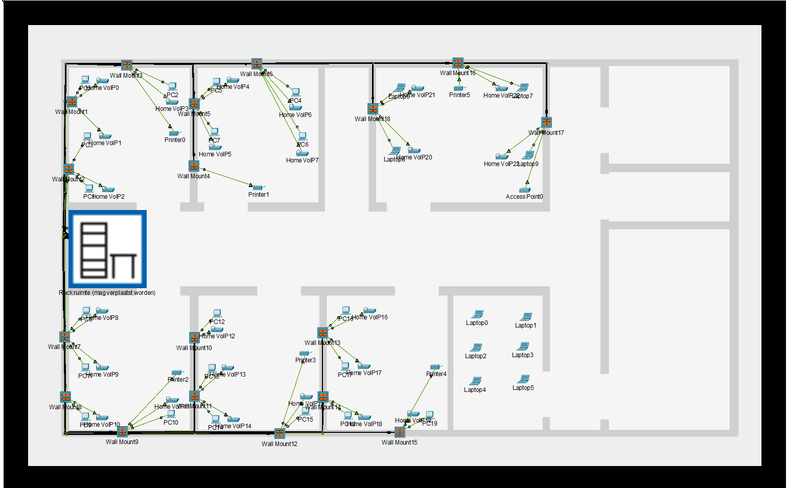

Opdracht Webwiz

Samenvatting
- Doel een realistisch beeld creëren van hoe een volledige netwerkinfrastructuur in een bedrijf wordt opgezet
- Tools - Cisco Packet tracer
Uitdaging & Oplossing
Voor dit project maakte ik gebruik van Cisco Packet Tracer. Met dit programma controleer je onder andere of de netwerkbekabeling binnen de maximale lengte bleef en of er voldoende aansluitpunten beschikbaar waren voor toekomstige uitbreidingen.
We moesten bij dit project ook een rack-lay-out maken om een duidelijk overzicht te krijgen van alle netwerkapparatuur en hoe deze fysiek geplaatst zou worden in het serverrack. Door de indeling visueel weer te geven, konden we nauwkeurig bepalen welke componenten waar moesten komen te staan en hoe de bekabeling het beste georganiseerd kon worden. Een goede rack-lay-out is bovendien erg handig omdat het toekomstige onderhoud en uitbreidingen eenvoudiger en efficiënter maakt.
Vervolgens stelde ik een patchplan op, waarin precies staat welke netwerkkabel met welke poort verbonden is. Dit is belangrijk omdat fouten daardoor sneller kunnen worden opgespoord en opgelost, en het netwerk overzichtelijk en beheersbaar blijft.
Tot slot werkte ik een bestellijst uit, zodat in één oogopslag duidelijk was welke apparatuur, bekabeling en randapparatuur nodig waren, inclusief de totale kostprijs van de volledige netwerkinstallatie. Dit maakt het mogelijk om het project nauwkeurig te budgetteren en later efficiënt te evalueren.